Kitties runs many autonomous bots at once. Every kitty has a soul you shape, a brain from any provider, and a body: its own sandboxed desktop with a browser and tools. It works while you watch — or while you sleep.
A kitty working on its own desktop: replies on the left; on the right the latest screenshot and what it said it was doing, its actions folded under a count.
11+ AI providers
Linux · macOS · Windows · Android
Signed, self-updating releases
English · Español · Português
Chatbots talk. Kitties do.
Most assistants stop at advice. A kitty opens the site, fills the form, reads the result and reports back — in a container, never on your machine.
Chatbot
Kitties
Works on real apps
Text only
Browser, editor, files, office
Runs while you are away
No
Goals, schedules, events
Safe to give access
Your machine
Isolated Docker desktop
Your choice of model
One vendor
Any provider, per kitty
You stay in control
Hope
Approvals, limits, take-over
Everything a team of agents needs
Built for autonomy, designed to stay under your control.
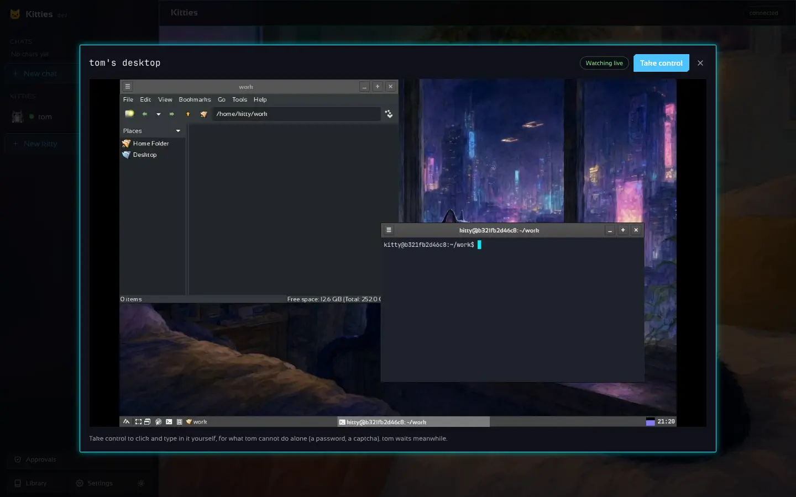
A real desktop per kitty
Ask it to open a site or fill a form. It reads pages from the inside, its files and a terminal as text, reads PDFs and Office files without opening them, and runs several steps in one go, keeping screenshots for what text cannot tell: far fewer tokens, counted on every message. A goal can replay saved steps on its own, with no model at all. The chat tells you in a short line what it is about to do, with the actions folded under a count and the view following the latest. Watch it live in H.264 (voxl), or take control for a password or a captcha.
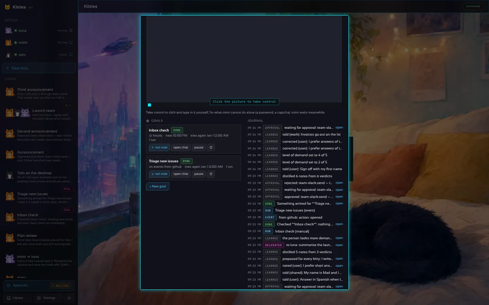
Autonomy, with a budget
Scheduled tasks on a schedule or triggered by events, in a section of their own with each one's history of runs (your chats stay yours), that try again by themselves when they get stuck, daily budgets it resumes from, a spare model when one is down, a backup kitty, a lead kitty that orchestrates the others, delegation between kitties and a journal of everything, each in its own tab of the kitty’s window (Desktop, Goals, Journal, Notes, Configuration).
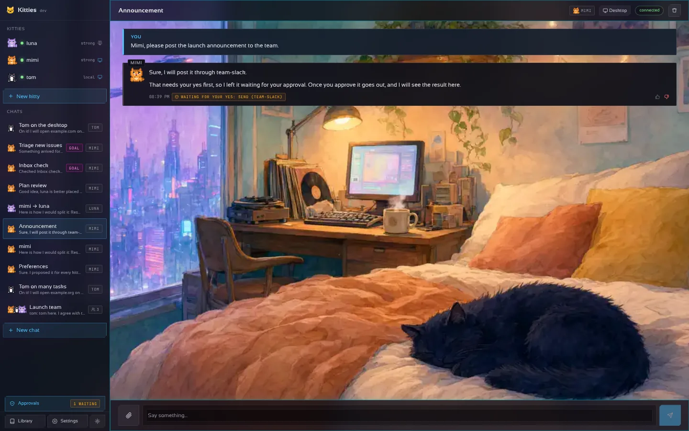
Trust that grows
Memory that persists, its own and shared by every kitty, that you can search, correct, export and import (a kitty only proposes what every kitty should know, and you get a notice; unused notes are cleaned up), thumbs that teach your standards, action limits and approvals that loosen as a kitty earns trust.
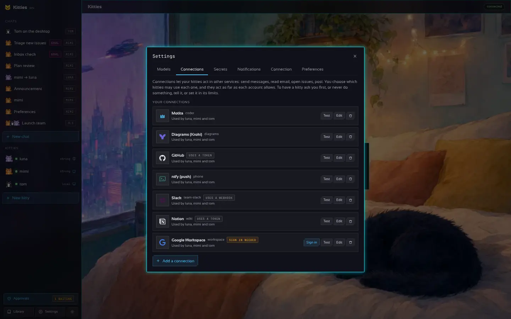
Connectors, not pasted keys
Slack, GitHub, Gmail, Google Workspace, Microsoft 365, Spotify, Stripe, Home Assistant and more — with sign-in where the service allows it.
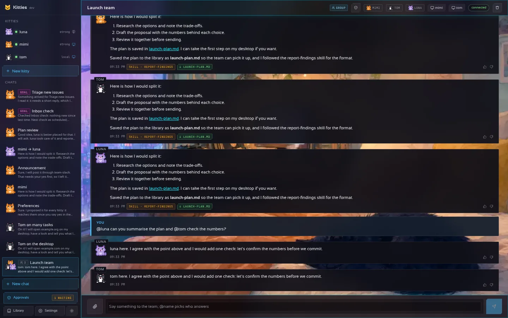
Group chats
Open one thread and let several kitties work on it together, each with its own personality and model. The sidebar lists your kitties first, and every chat shows a few lines of what it is on, with secrets masked. When a kitty hands a subtask to another, the chat becomes a group of both and the helper answers there with its own name and cat, working live until it does; the thread between the two is a detail that goes after 72 hours unless you keep it, so nothing reads twice. A button lists only the group chats.
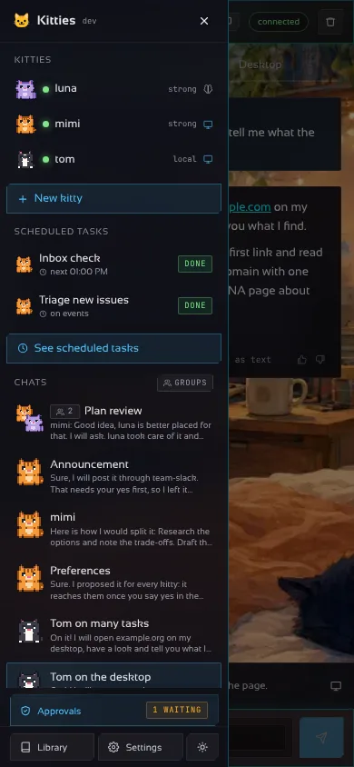
Everywhere you are
CLI, desktop app, Android app, and a server mode with https. Notifications reach your phone when a kitty needs a yes, and you can answer it right from ntfy.
A desktop worth watching
Lumen, a light window manager based on Openbox, with its own shelf — pinned apps, a player, the weather, a clock — in a dark theme with Lucide icons and Sansation type. Beautiful on purpose.
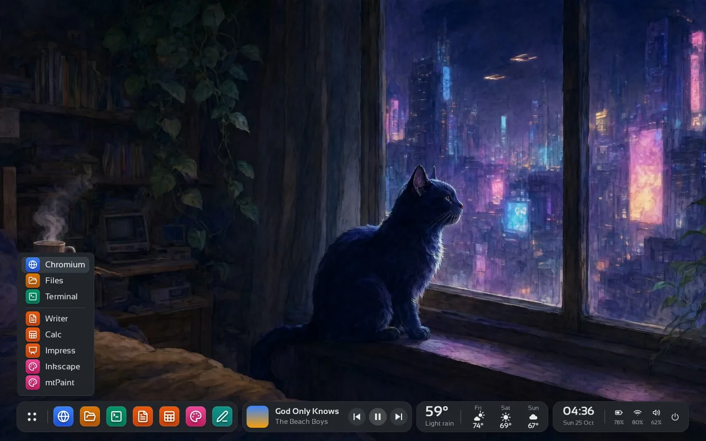
The apps menu open on the kitty desktop
Chat on one side, desktop on the other
On a wide screen the chat splits in two: the kitty’s replies on the left, its steps and the latest screenshot, large, on the right. On a phone the two become tabs.
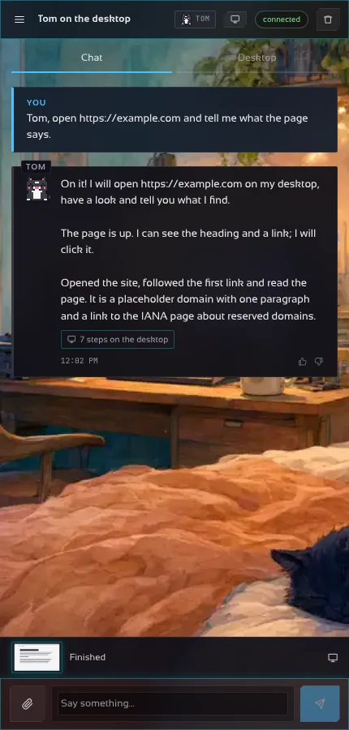
Chat tab
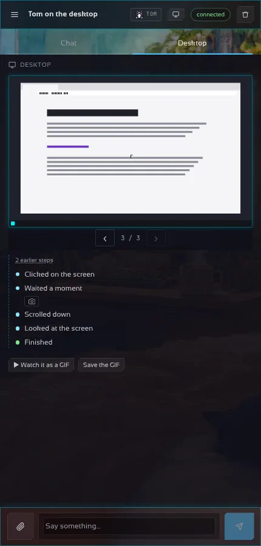
Desktop tab
Talk to it from the desktop window
The live desktop carries the kitty’s chat as a sidebar: write to it, attach files and follow its steps without leaving the picture. Fold it away when you only want to watch; on a phone it stacks under the screen.
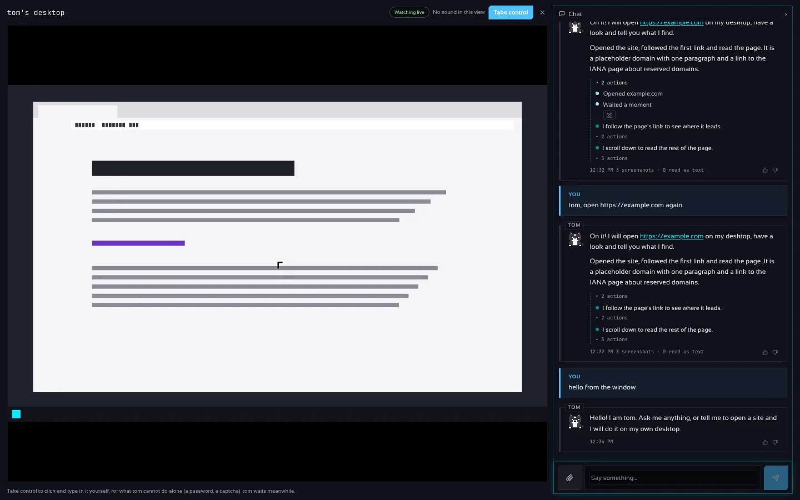
The live desktop with the chat beside it
Every chat knows what it is for
The ⋯ menu of a chat, in the sidebar or its header, renames it, gives it a description or deletes it after asking. The description is the base of the chat: its kitties read it before every answer, so changing it changes what they work on from the next message. One button has a kitty read the whole chat and write a fresh title and description for you to check, and when the chat changes course its kitty proposes a new description you accept or dismiss. The last ten are kept to go back to, and the sidebar searches chats by title, description or last words.
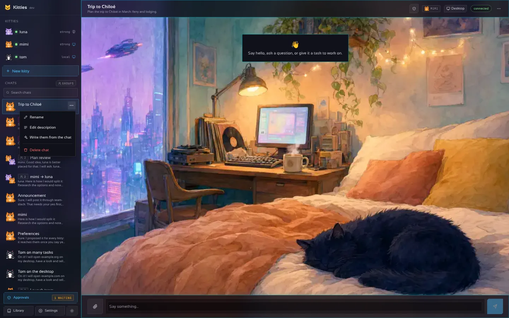
The ⋯ menu of a chat, and its description under the title
Attach anything to the chat
Pictures, PDFs, documents and text: with the paperclip, by dragging them onto the page or by pasting. The kitty reads them with its own model, and a kitty with a machine finds the file there to work on.
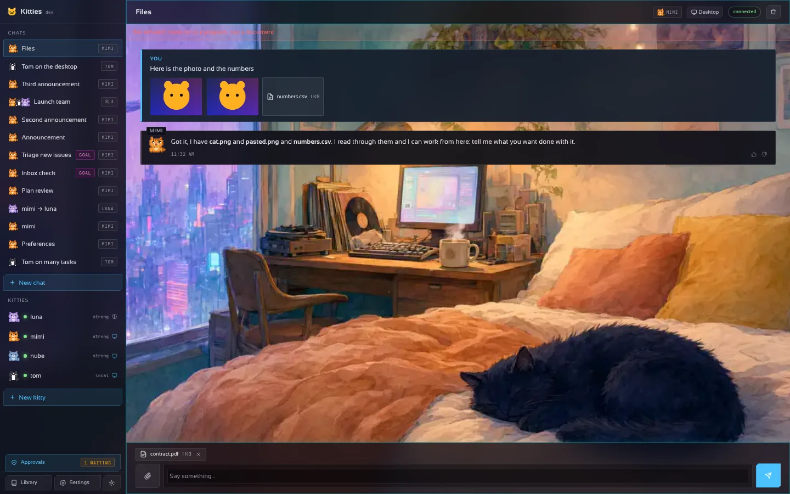
A message with a picture and a spreadsheet, and a PDF waiting to be sent
Get back what they make, through every update
Each kitty keeps its home, settings and the programs it installed on your computer, so a new desktop image changes nothing it built. What it makes for you lands in its Shared folder: preview and download it from the Library, keep it for the other kitties, or export a kitty’s files in one go.
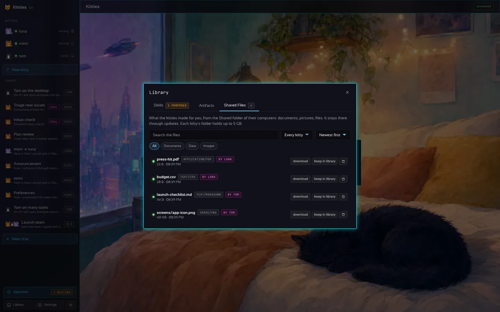
The Library’s Shared tab
Updates in one click
Kitties looks for new releases by itself and tells you in the sidebar. One click shows what changed; another installs it with a progress bar, restarts the gateway and refreshes the window on the new version, while the kitties’ desktops keep running. The desktop app updates as a whole and opens again on its own; in a container it tells you how to update.
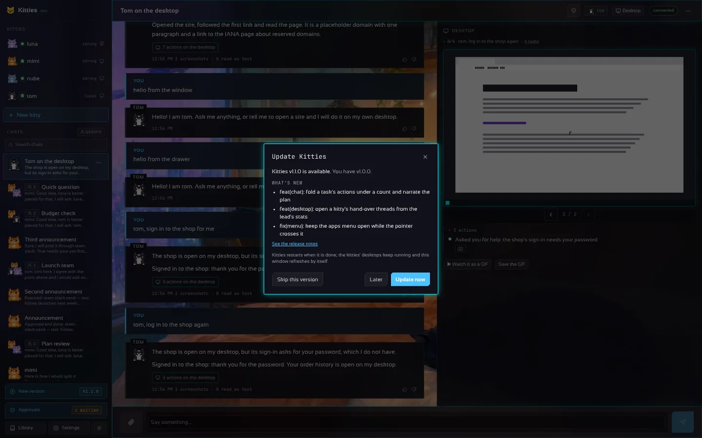
What is new, before updating
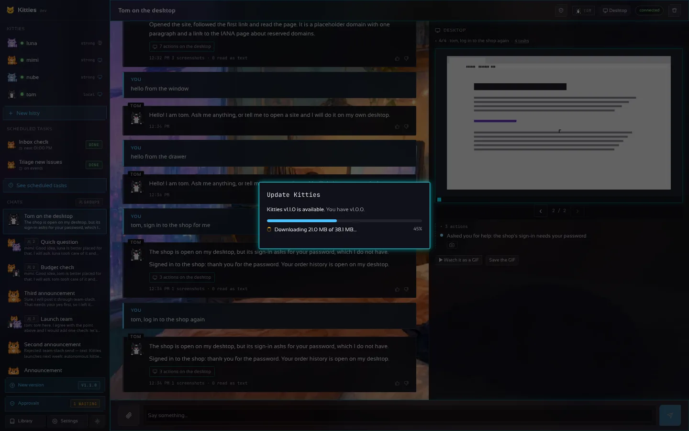
The update, with its progress
The kitties’ desktops too: when a new desktop image comes out, the sidebar says how many kitties can have it. Update them all, or the ones you pick, and watch each one: its home, programs, browser profile and Shared folder stay on your computer, its logins are backed up and put back, a kitty at work is left for later and a stopped one gets it when it starts.
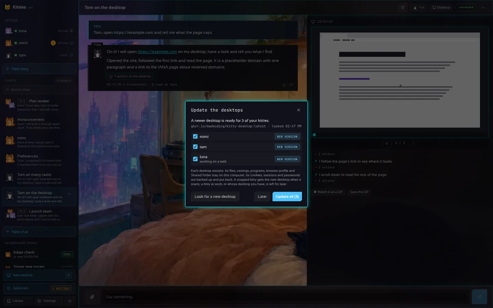
Every kitty’s desktop, updated in one go
Machines that know their memory
Each kitty’s desktop has its own RAM and swap, set in Settings › Machines for every kitty or for each one. The kitty sees how much is used and free, opens only the browser tabs and programs that fit, and closes what it no longer needs; when the memory is nearly full, a new tab is refused until it makes room.
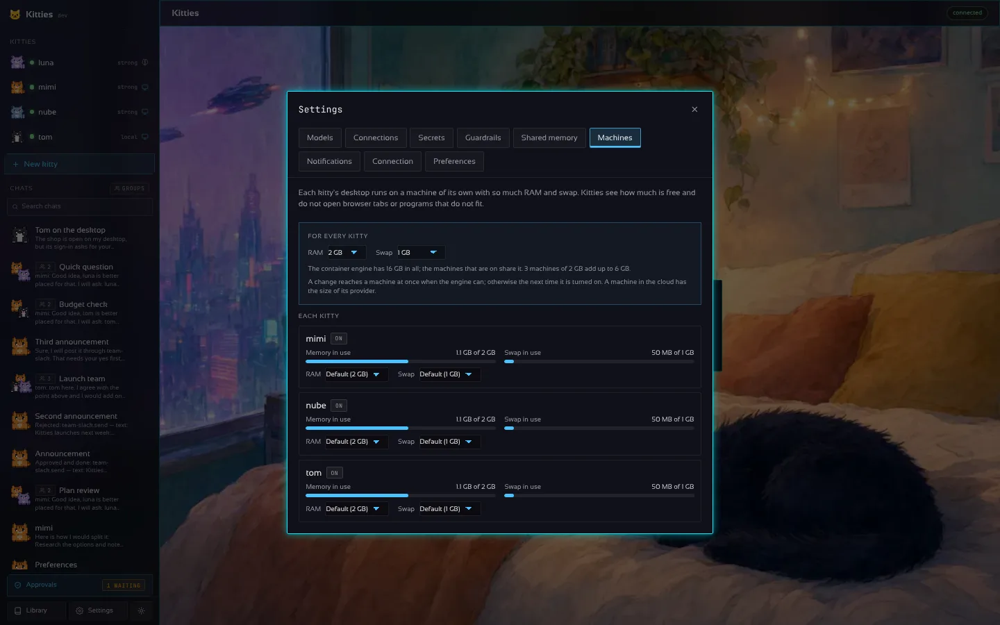
Settings → Machines
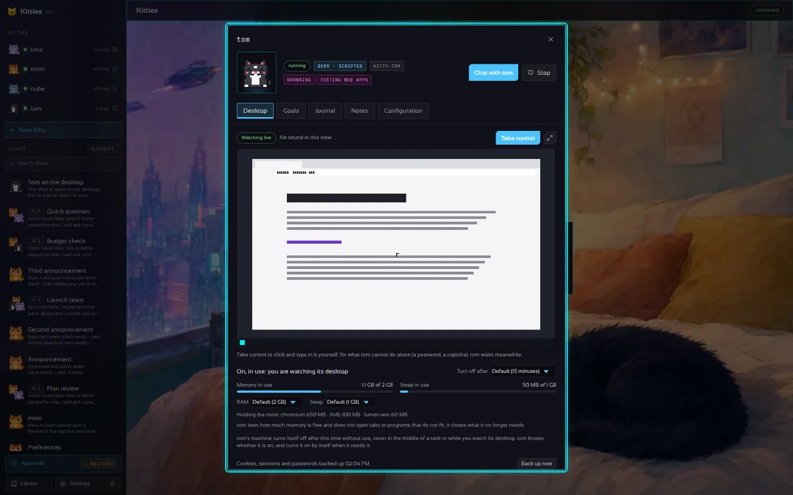
One kitty’s machine
A disk that does not fill up by itself
What grows on its own is kept in check: the screenshots the kitties take at every step go after the days and the space you choose, the desktop images an update leaves behind are deleted, and logs and caches have a cap. Settings › Preferences › Storage shows where the disk goes and frees space in one click; your chats, files and the kitties' folders are never deleted.
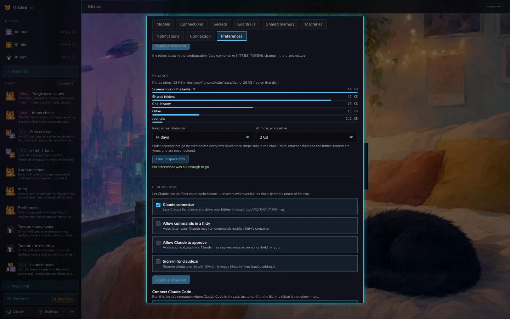
Settings → Preferences → Storage
Let Claude run the fleet
The MCP connector is on at the gateway, behind a token of its own, wherever Kitties answers: this computer, your network or your public https address. Claude Code or claude.ai can list, create, start and give tasks to your kitties. Settings gives the connect command for each address, puts the token in only when you copy it, and lets you choose what Claude may do and revoke any client in a click. It can also read and tend what each kitty remembers about you.
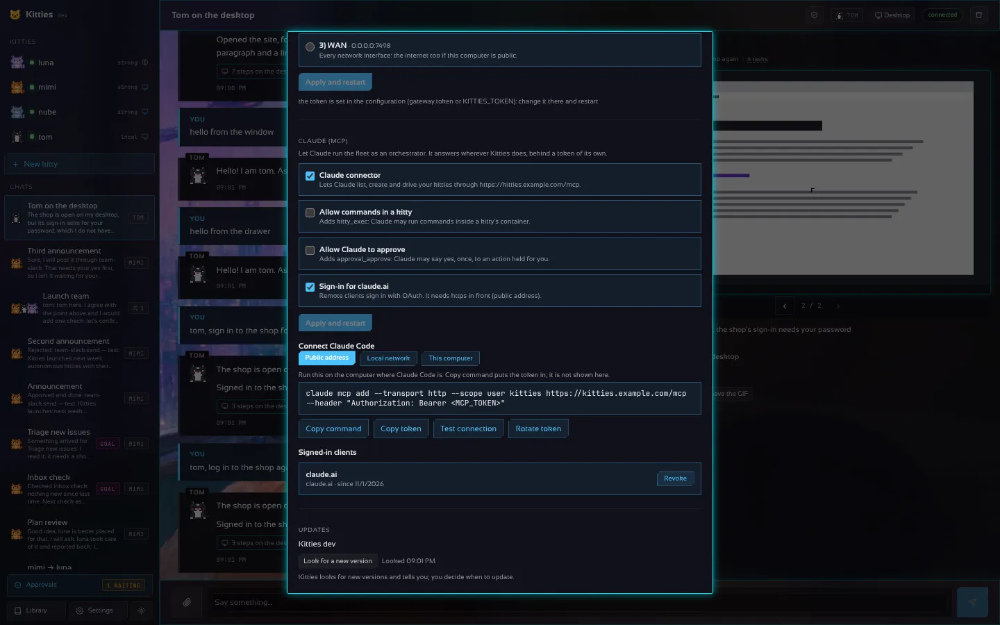
Settings → Preferences → Claude (MCP)
# Settings → Preferences → Claude (MCP) → Copy command, or by hand:
claude mcp add --transport http --scope user kitties http://<gateway>:7488/mcp \
--header "Authorization: Bearer <MCP token>"
One kitty leads the others
Make one kitty the lead and it becomes your main contact: you ask it, it splits the work among the kitties best placed for each piece, gathers their answers (several kitties at the same time, showing who works and who waits) and gives you one report; it sums the reports up with one click or every day at the hour you choose; for a long task it can give a kitty more rounds, tokens or time, for that task alone or for good, within caps and, if you want, only with your yes. What the others have to tell you (goals done or stuck, help they need, an action waiting for a yes, the daily summary) reaches you through it, in its Reports thread (one report per chat, not the same news twice), which has its own place in the sidebar after the chats, and in its name. The others follow it first and ask it their doubts; it answers them, and asks you only what it cannot decide, then passes your answer on. Like an elephant with goldfish: it keeps the whole picture, and each kitty gets a task that stands on its own. New chats, WhatsApp and kitties chat go to it unless you pick another kitty. One click in a kitty’s drawer, lead: true in the YAML, kitties lead <name>, or Claude through MCP.
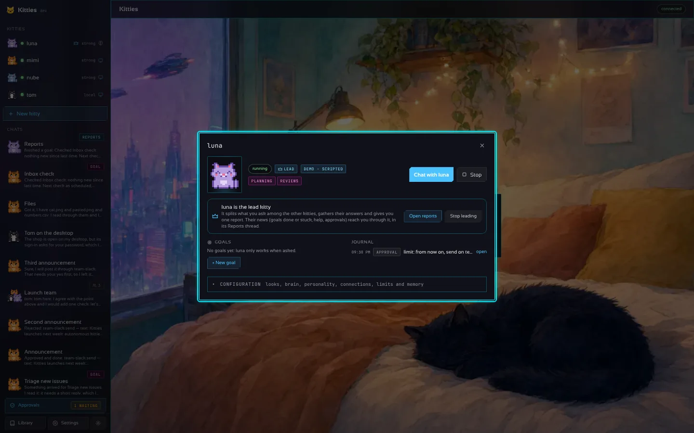
The lead, in its drawer
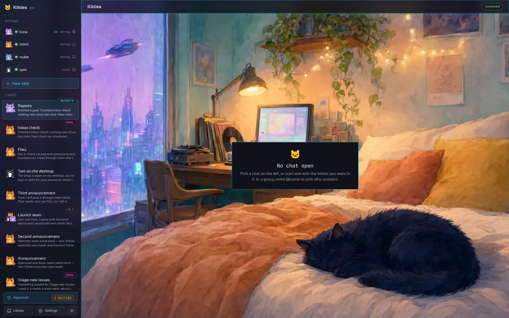
The others' news, in its Reports thread
Talk to your kitties on WhatsApp
Give the kitties a number of their own: link a spare phone as on WhatsApp Web by scanning a QR code in Settings. The people you put on the list chat with a kitty from WhatsApp, and the kitties write back to them, "typing…" while they think. They answer in the groups you pick when mentioned, read pictures, documents, stickers and locations, hear voice notes and answer with their own (text to speech, each kitty with its own voice, for every answer or only to voice notes), send back the files they make and react with emoji. Each number or group can have its own kitty, with an hourly limit and quiet hours to keep the number safe; what the limit holds back is kept sealed and listed in Settings, to resend when there is room. Off by default, the list starts empty and the session is sealed with the vault's key. It is not an official API and WhatsApp may ban the number, so the first time you turn it on a welcome screen asks you to accept that risk; the official way is the WhatsApp Cloud API connection. Each message reaches the kitty with who wrote it (name and number) and, for a reply, whose message it answers, so the people of a group are never taken for one another or for you; you name your contacts in Settings, and until then the kitty uses the name they gave themselves on WhatsApp. The WhatsApp kitty works on its own, as a principal beside the lead: its own notes (including notes about the people and groups it talks with, the only ones it uses there) and its own files, no shared notes, no chats or work with other kitties, and only the lead to talk to, which hands it nothing secret; from a group it may ask the lead, only once you say yes. So it can take part in groups without mixing what each side knows.
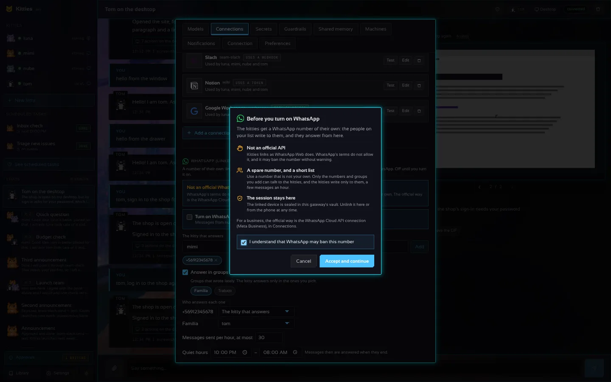
The first time: accept the risk
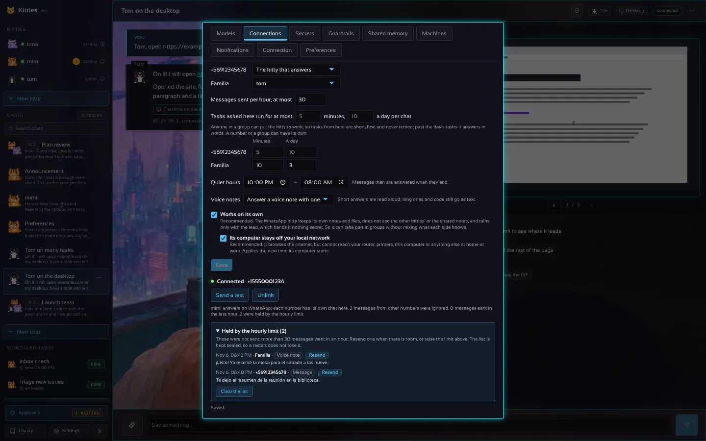
Voice notes, a kitty on its own and the messages the hourly limit held
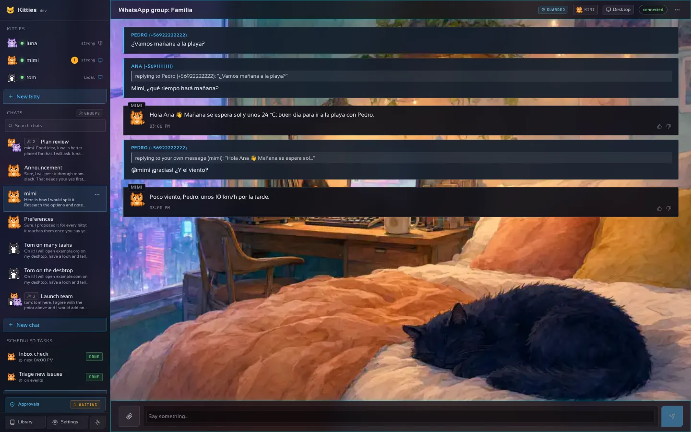
Who wrote each message, and whose message a reply answers
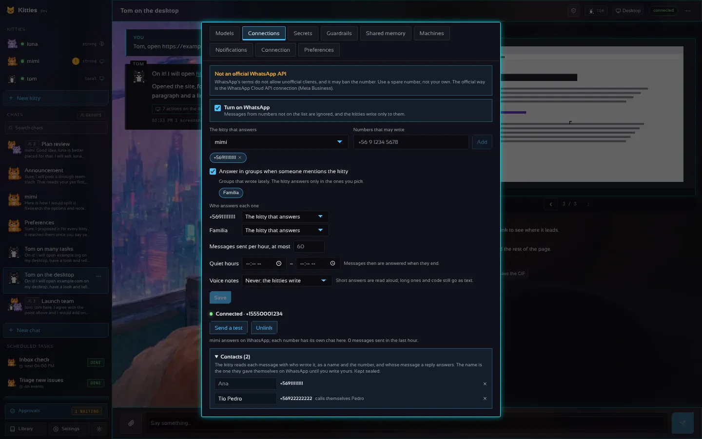
Name your contacts
Guardrails when a kitty answers others
A kitty that talks to your WhatsApp contacts and groups, or in a chat you mark public, is guarded by default. There it has no desktop, files, saved secrets, notes about you or other kitties, only the connections you pick. Everything it says is checked before it leaves: the secrets Kitties knows (keys, tokens, the vault), anything shaped like a credential, internal paths and addresses and, unless you turn it off, personal data the other side did not give are taken out. What others write reaches the model as data, never as instructions; a message that tries to make the kitty break its rules gets a short no, and each chat has a limit of messages per hour. Your own numbers keep the whole kitty, and Settings shows what the guardrails took out or refused, never the secret itself.
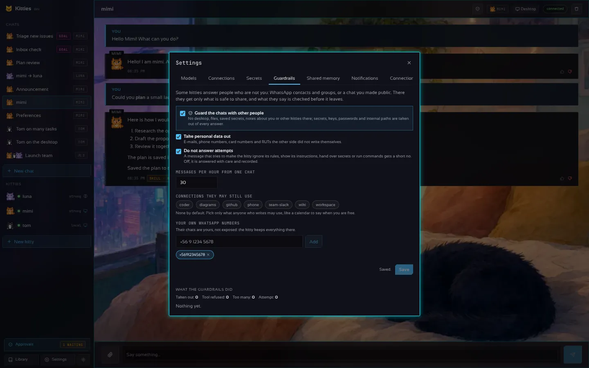
Settings → Guardrails
Pick a soul. Pick a brain. Press go.
1
Soul
A personality in a small YAML file. Yours to shape.
2
Brain
OpenAI, Anthropic, Gemini, Ollama, Groq, OpenRouter, DeepSeek, Qwen, Mistral, Copilot or any compatible server.
3
Body
A Docker container with a headless desktop, browser and the usual tools.
Download Kitties
The desktop app carries its own gateway and starts it when none is running: nothing else to install.
Windows
x64. Run the installer: no administrator needed; it asks if Kitties is reachable only here, on your LAN or on WAN. SmartScreen asks once: More info, then Run anyway.
On a Linux server, one command installs the gateway with a systemd service. It explains each step and asks where to expose it (1 local, 2 LAN or 3 WAN, with a risk warning); the LAN comes first by default, so you set it up from another computer with the token and go back to local from Settings, can open the firewall, set up https with Caddy and take your model key. At the end it shows where to open the page and its token (sudo kitties token shows it again; a new one from Settings if it gets out). Afterwards: kitties gateway start|stop|restart|status|logs, and from the terminal, without the page or a model key, kitties expose local|lan|wan, kitties config and kitties token rotate. Verified against the release checksums and signature.
curl -fsSL https://raw.githubusercontent.com/madkoding/kitties/main/scripts/install.sh | sudo sh
go install github.com/madkoding/kitties/cmd/kitties@latest
kitties -demo gateway # open http://127.0.0.1:7488
kitties init
export ANTHROPIC_API_KEY=...
make image
kitties gateway
No. Each kitty works inside its own Docker or Podman container with a headless desktop.
Which models can I use?
Any of 11+ providers, with an API key or a subscription, chosen per kitty. The first run signs you in to the plan you already pay for (Claude, ChatGPT or GitHub Copilot) right from the browser, even on another computer. Ollama keeps everything local; Ollama Cloud takes its key.
What does it cost?
Nothing. Kitties is free software under GPL-3.0-or-later. You pay only your model provider, and daily budgets cap that.
Can I answer a kitty from a notification?
Yes, with ntfy. Tick “Let me answer from ntfy” in Settings → Notifications and write to the same topic, from the ntfy web app or any client that publishes: the message goes to the kitty that notified you, to the one you name (luna: …), or to all of them (all: …); with nothing named, the lead kitty answers. Its answer comes back as a notification. The topic works as a password, so it needs 20 characters or an access token.
Can I stop a kitty?
Always. Set limits, require approvals for risky actions, or take over the desktop live.